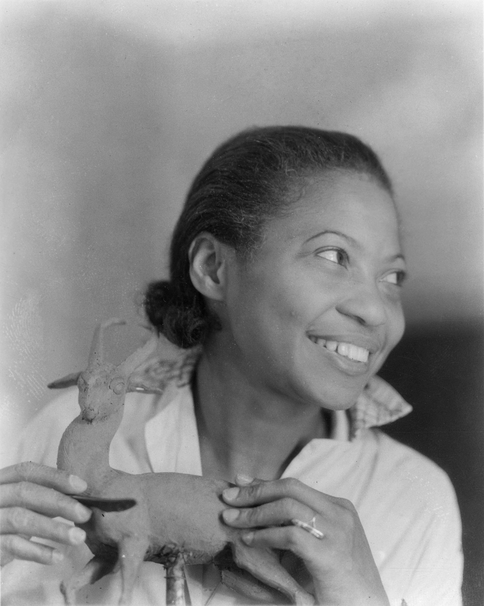

Augusta Savage, born in 1892, was known best for being a talented sculptor during the Harlem Renaissance. When she was younger, she began using natural clay found in her area of Florida, where she grew up, to create art. She was a talented sculptor even as a child and was known for sculpting animals and other small figures when she was younger..
In the 1920s, Augusta moved to NYC to study at Cooper Union and finished college early and chose to make a name for herself as a portrait sculptor. Her works included famous historical African American figures like W.E.B. Du Bios and Marcus Garvey. Augusta would later get opportunities to study abroad in Paris where she exhibited her works of art that won her many awards like the Julius Rosenwald fellowship in 1929. Perhaps most notably, she helped found the Harlem Artists’ Guild and assisted many African American artists during her time by lobbying for the Works Projects Administration (WPA) to help other young artists find work during this tough economical time in history. 